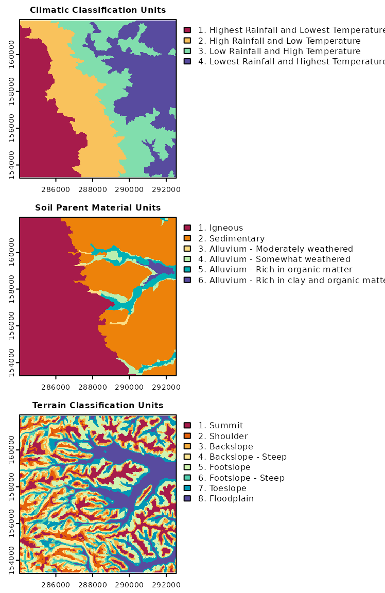

Stratification Units
rassta: Raster-based Spatial Stratification Algorithms
Source:vignettes/stratunits.Rmd
stratunits.RmdGet the data required for this vignette
# Compressed folder with files from rassta’s installation folder
wasoil <- system.file("exdat/wasoil.zip", package = "rassta")
# Directory for temporary files
o <- tempdir()
# Copy compressed folder to directory for temporary files
file.copy(from = wasoil, to = o)
#> [1] TRUE
# Extract files to subfolder
d <- paste(o, "/rassta", sep = "")
unzip(paste(o, "/wasoil.zip", sep = ""), exdir = d)Stratification units are second-level spatial entities that result from the spatial intersection of n sets of classification units. Each set of classification units may represent a landscape factor (e.g., topography), or a particular spatial scale of a landscape factor (e.g., micro-topography). One example of a stratification unit can be a unit representing cold, dry, and steeped terrain in high altitude. This stratification unit could have resulted from the spatial intersection of climatic classification units representing both precipitation and temperature gradients, and topographic classification units representing both elevation and slope gradients. Currently, rassta allows the creation of stratification units based on the simple intersection of raster layers representing sets of classification units.
Spatial intersection of classification units
The process to create stratification units is fairly simple. First, n sets of classification units need to be loaded as a terra’s multi-layer SpatRaster object. Raster layers in this object must represent categorical data (i.e., classification units). Then, the function strata() is used to perform two processes: (1) spatial intersection of raster layers, and (2) assignment of a unique numeric code to each resulting unit.
For this example, three sets of classification units will be used to create one set of stratification units. The sets of classification units correspond to (i) climatic, (ii) soil parent material, and (iii) terrain classification units. The maps below show the classification units and the interpretation for each set of classification units.
# Load rassta and terra packages
library(rassta)
library(terra)
# Multi-layer SpatRaster with 3 sets of classification units
cu <- c("climate.tif", "material.tif", "terrain.tif")
cudir <- paste(d, cu, sep = "/")
all.cu <- rast(cudir)
# Plot the sets of classification units
par(mfrow = c(3, 1))
plot(all.cu[[1]], type = "classes", main = "Climatic Classification Units",
col = hcl.colors(4, "spectral"), mar = c(1.5, 1.5, 1.5, 16),
levels = c("1. Highest Rainfall and Lowest Temperature",
"2. High Rainfall and Low Temperature",
"3. Low Rainfall and High Temperature",
"4. Lowest Rainfall and Highest Temperature"
)
)
plot(all.cu[[2]], type = "classes", main = "Soil Parent Material Units",
col = hcl.colors(6, "spectral"), mar = c(1.5, 1.5, 1.5, 16),
levels = c("1. Igneous", "2. Sedimentary",
"3. Alluvium - Moderately weathered ",
"4. Alluvium - Somewhat weathered",
"5. Alluvium - Rich in organic matter",
"6. Alluvium - Rich in clay and organic matter"
)
)
plot(all.cu[[3]], type = "classes", main = "Terrain Classification Units",
col = hcl.colors(8, "spectral"), mar = c(1.5, 1.5, 1.5, 16),
levels = c("1. Summit", "2. Shoulder", "3. Backslope",
"4. Backslope - Steep", "5. Footslope",
"6. Footslope - Steep", "7. Toeslope", "8. Floodplain"
)
)
The following code demonstrates how to create stratification units from the three sets of classification units with the function strata().
# Stratification units from the intersection of classification units
su <- strata(cu.rast = all.cu)
# Plot SpatRaster of stratification units
plot(su$su.rast, type = "classes", main = "Stratification Units",
col = hcl.colors(length(unique(su$su.rast)[, 1]), "spectral"),
plg = list(ncol = 4), mar = c(1.5, 1.5, 1.5, 12)
)Numeric code of stratification units
The numeric code makes it possible to trace back the specific classification unit that composes a given stratification unit. The code below demonstrates how to retrieve the multipliers used to create the numeric codes for the stratification units.
# Print multipliers used to code each stratification unit
su$code.mult
#> climate material terrain
#> 100 10 1The multipliers indicate the relative placement of the classification unit’s numeric ID from each landscape factor or factor scale. In this example, the classification unit from climate is denoted by the hundreds digit, that from soil parent material is denoted by the tens digit, and that from terrain is denoted by the units digit. For example, the stratification unit 111 indicates the spatial convergence of the climatic classification unit = 1 (highest rainfall and lowest temperature), the parent material classification unit = 1 (igneous), and the terrain classification unit = 1 (summit). Therefore, the stratification unit 111 can be interpreted as summits located on areas of volcanic origin (igneous), which are exposed to the highest amount of precipitation and the lowest temperature, as compared to the rest of the landscape.
Clean files from temporary directory
References
- B.A. Fuentes, M.J. Dorantes, and J.R. Tipton. rassta: Raster-based Spatial Stratification Algorithms. EarthArXiv, 2021. https://doi.org/10.31223/X50S57